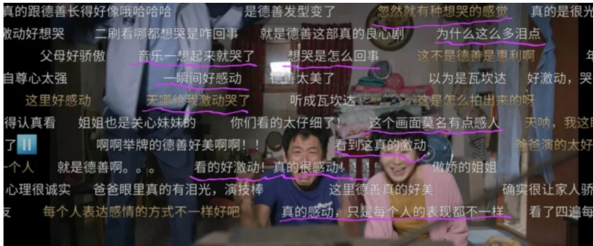

《请回答1988》| 一部神剧背后的国家命运
有一部韩国神剧，叫《请回答1988》，豆瓣评分9.7分，这几乎是一个满分的分数。 在豆瓣电视剧TOP100排行榜里，这是最高分数之一，如果用评价总人数加权，那就是妥妥的豆瓣第一神剧。 要知道这个榜单里与其PK的是《老友记》《权游》《绝命毒师》《生活大爆炸》等一众世界级神剧。
《1988》之好，很难找到非常贴切词汇去描述，明明剧情上无任何特殊之处(就是平凡人的日常生活)，但就在平凡之中处处体现细节，处处埋藏伏笔，情感的刻画与情绪的捕捉细腻到极致。 这种细致加上演员毫无痕迹的本色演绎，往往在一集90分钟的长度中，让人情绪反复颠转数次，前一秒还在为主人公哭泣，眼泪还没来得及擦干，后一秒又笑到腹肌疼痛。 比起伟人伟事，从凡人的日常琐碎中挖掘出的伟大与真善美，更让人动容。
笔者不可遏制地刷剧三遍之后，不禁思考为什么能拍的这么好？到底哪里好呢？
豆瓣上有不少极为专业的评论，把剧情，人物，细节解构之后一一点评分析，笔者也非常认同这些专业分析，但仅从好演员和好剧本去解释总觉得少了点什么。 直到最近笔者突然想到，其实还有一个关键的维度，那些专业影评大神们没有想到，那就是：《1988》背后浓缩了80年代以来韩国整个国家的命运。 顾名思义，《1988》讲的是1988年的故事，首尔双门洞（"洞"可以理解为胡同）几家街坊邻里之间的日常。1988年对于韩国来说是不平凡的一年，这一年汉城举办了奥运会。第一集的高潮就发生在主人公成德善参加奥运会当举牌小姐的桥段中。当德善出现在直播镜头中的时候，奥运会主题曲《手拉手》突然响起，全家人手舞足蹈，激动落泪。
再看韩国当年的经济情况，1988年韩国人均GDP是4686.14美元，而仅仅一年之后就达到5726.90美元，年增长率达到惊人的22.2%，从曲线图中可以看到，韩国经济80年代以来急速拉升，直到1996年亚洲金融危机前夕达到当时历史高点13137.91美元。
而《1988》的故事恰好就是发生在韩国刚举办完奥运会，经济狂飙突进，国民生活水平快速提升的年代。
看过今年奥斯卡最佳影片《寄生虫》的人会对其中一段对话记忆犹新： "不是‘有钱却善良’" "是‘有钱所以善良’，懂吗？""如果我有这些钱的话，我也会善良"
《1988》之所以能把人性的真善美展现地如此淋漓尽致，正是因为韩国处在国民快速变富的过程中，有了钱，人自然更善良。
所以故事既不能发生在70年代，也不能发生在00年代，而只能发生在80-90这段韩国国运昌隆的黄金时代。
国运上升的势头在80年代韩国的音乐中也体现得非常充分，剧中穿插的大量曲目绝大部分欢快阳光、充满激情、昂扬向上，体现了那个年代整个韩国国民的精神面貌。
韩国在1997年，2008年遇到短暂的经济危机之后经济继续一路走高，直到今天，人均GDP突破3万美金大关，逐渐逼近日本。
人口超过5000万的国家中，人均GDP超过3万美元的国家，这个地球上一共就只有7个。
经济层面上，韩国经历了一两代人的血与泪的积累，终于完成了落后的农业国到先进工业国的转变。论个人发展和生活水平，绝大多数韩国国民从1988年至今都获得了极大的提高。
无论是个人还是国家，成功以后回顾过往，往往可以非常坦然理性地面对，因为无论过程多么艰辛，因结局美好，所以过去的每一幕都是值得的。
当前的状态会决定对自身过往的评价。
从这个意义上说《1988》摄制于2015年，其实就是2015年经济上已经成功的韩国回顾自己的1988年，给自己的评价。
对我们的启示
上面铺垫了那么多韩国的过往，其实是为了说说中国。 我们之所以还无法拍出自己的《1988》，是因为目前还没有完成最终的全面复兴。 但是按照上述逻辑，不妨推测一下何时中国能拍出自己的《1988》。
韩国1988年举办了汉城奥运会，经济狂飙突进，制造业立国，27年后在2015年拍出了《1988》。 而中国2008年举办了北京奥运会，经济也是狂飙突进，同样制造业立国，那么27年后就是2035年，我们会不会有《请回答2008》呢？ 会的。
2035年，当我们完成了包括半导体在内一切先进科技的突破，站在人类工业化的至高点上回顾过去，会想到伟大的2008年奥运会，会想到中兴和华为，会想到2020年新冠疫情、北斗系统，还有贯穿十数年的贸易战和科技战。
我们会拍出更加精彩的中国版《请回答2008》甚至《请回答2020》
中华民族终将完成伟大复兴。